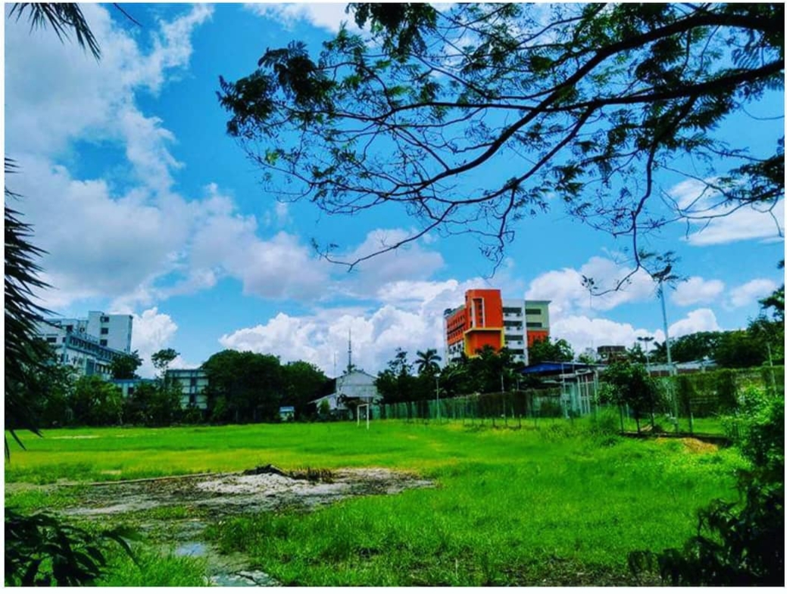
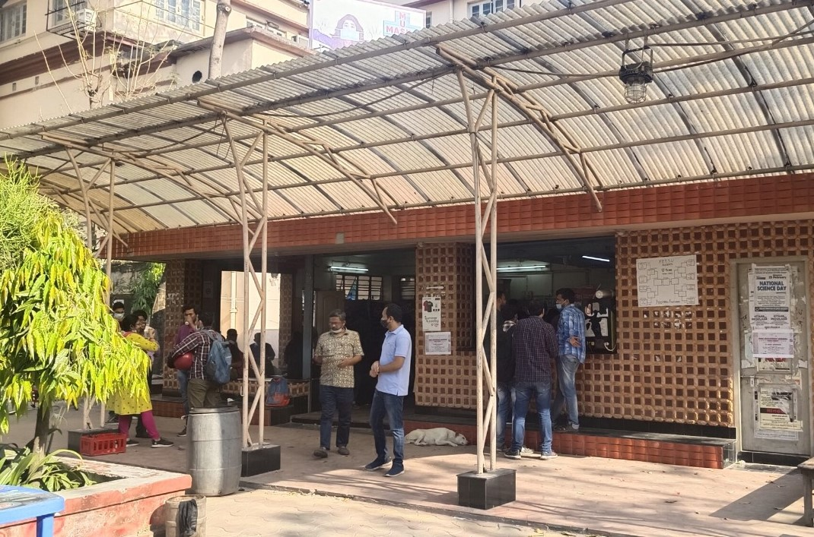

Our Facilities
The university is extremely keen on the betterment of infrastructure to promote a more conducive academic environment. Major developmental works were taken up during the 2008-2013 period

ju central libary
Three-storied building on the campus. Its shelf space and working space total 36,000 sq. ft. Seven reading rooms, carrels, and an alcove for bound volumes of journals provide sitting accommodation for 700 readers.There is a separate libary for salt lake campus.

Largest Play Ground
Discover a playground paradise with us!

canteen
More than 7 canteens and Restaurants throughout the campus. Discover the best foods from from snacks to desserts at affordable prices and best qualities with the best tastes.